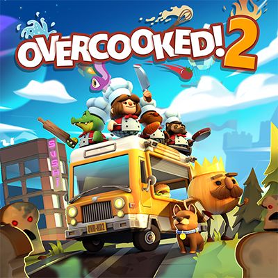

This is the best games
Mobile
1º Minecraft
You can create and explore your own word, survive against the monster and build amazing things.
2º Clash of Clans
The game is set in a fantasy-themed persistent world where the player is a chief of a village. Clash of Clans tasks players to build their own village using the resources gained from attacking other player's villages with troops; earning rewards, buying them with medals or by producing them at their own village. The main resources are gold, elixir and dark elixir. Players can conjoin to create clans, groups of up to fifty people, who can then participate in Clan Wars together, donate and receive troops, and chat with each other.
Desktop
1º Overcooked
Overcooked 2 is a cooperative cooking simulation video game, teams of up to four players cooperatively prepare and cook orders in absurd restaurants.
2º Garry's Mod
Garry's Mod is a physics sandbox. There aren't any predefined aims or goals. We give you the tools and leave you to play. You spawn objects and weld them together to create your own contraptions - whether that's a car, a rocket, a catapult or something that doesn't have a name yet - that's up to you. You can do it offline, or join the thousands of players who play online each day. If you're not too great at construction - don't worry! You can place a variety of characters in silly positions. But if you want to do more, we have the means.